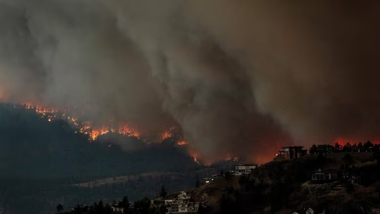

I. Introduction
Wildfires have become increasingly devastating due to climate change, posing significant risks to lives and property. Building wildfire-resistant structures is paramount in mitigating these risks and protecting communities. 
II. Building Materials
Building materials play a crucial role in a structure's ability to withstand wildfires. Using
non-combustible materials like metal, concrete, or fiber cement for roofs and siding greatly reduces the
risk of ignition during a wildfire.
Incorporating fire-resistant windows made of tempered glass and solid-core doors with fire-rated materials
adds an extra layer of protection against heat and flames.
Embers carried by winds are a major cause of wildfire spread. Installing ember-resistant vents and screens
helps prevent ember penetration into the structure, reducing the likelihood of internal fires.
III. Design Considerations
Defensible space is an area around a structure where vegetation and other flammable materials are
strategically managed or removed. This space acts as a barrier, reducing the risk of fire spreading from
nearby vegetation or structures. Properly designed defensible space can give firefighters the opportunity
to defend the building and save lives.
Landscaping plays a crucial role in wildfire risk reduction. Using fire-resistant plants and maintaining
them properly can create a buffer zone around the structure. Additionally, maintaining adequate spacing
between vegetation and structures can slow down the advance of wildfires, providing valuable time for
evacuation and firefighting efforts.
Strategic placement of features like driveways, pathways, or non-flammable materials can serve as fire
breaks. These breaks disrupt the continuity of fuel sources, such as vegetation or combustible materials,
reducing the intensity of approaching wildfires. Buffer zones between structures and natural vegetation
further enhance the overall fire resistance of a property.
IV. Structural Features
Insulation and sheathing materials with fire-resistant properties are essential components of
wildfire-resistant structures. Fire-rated insulation materials and sheathing such as gypsum board can
delay the spread of flames and reduce heat transfer, protecting the structural integrity of the building.
Small gaps and openings in a building's exterior can allow embers and hot gases to enter, potentially
leading to internal fires. Sealing these gaps with fire-resistant caulking and installing ember-resistant
screens on vents and openings can significantly reduce this risk.
Chimneys are susceptible to releasing sparks and embers, especially during windy wildfire conditions.
Installing spark arrestors on chimneys helps prevent these fire sources from igniting nearby structures or
vegetation, adding an extra layer of protection against external fire sources.
V. Maintenance and Preparedness
Regular inspection and maintenance of roofs, gutters, and exterior surfaces are critical to remove debris
and reduce potential fire hazards. Keeping these areas clean and well-maintained can prevent ember
accumulation and reduce the risk of ignition during a wildfire event.
Developing and practicing an emergency evacuation plan is essential for ensuring the safety of residents
during wildfire incidents. This plan should include designated evacuation routes, emergency contact
information, and procedures for communication and coordination with local authorities and emergency
services.
Educating residents about wildfire safety measures is key to enhancing community resilience. Training on
early detection, proper use of fire extinguishers, evacuation protocols, and general fire safety awareness
empowers residents to take proactive measures and respond effectively during emergencies.
VI. Case Studies
Highlighting a specific home design that incorporates comprehensive wildfire-resistant features and
materials can serve as an educational model for homeowners, builders, and communities. This example can
showcase the effectiveness of wildfire-resistant strategies in protecting properties.
Sharing success stories of communities that have successfully implemented wildfire-resistant strategies
and reduced wildfire risks can inspire others to take similar actions. These success stories demonstrate
the positive impact of proactive measures and collaboration in creating safer living environments in
wildfire-prone areas.
VII. Conclusion
Building wildfire-resistant structures is not just about individual property protection but also about creating resilient communities in the face of increasing wildfire threats. Collaboration between homeowners, builders, local authorities, and wildfire agencies is crucial in implementing regulations, guidelines, and best practices for wildfire-resistant construction and maintenance. By adopting wildfire-resistant practices, investing in long-term resilience strategies, and fostering community awareness, we can build a safer future in wildfire-prone regions, mitigating the impacts of climate change on wildfire risk.